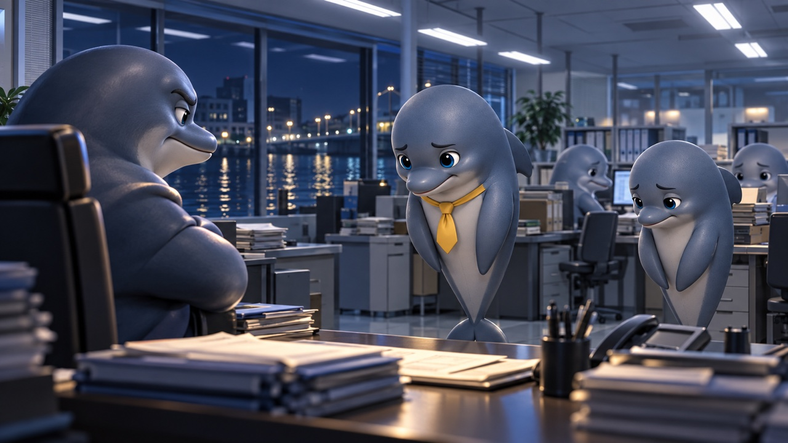
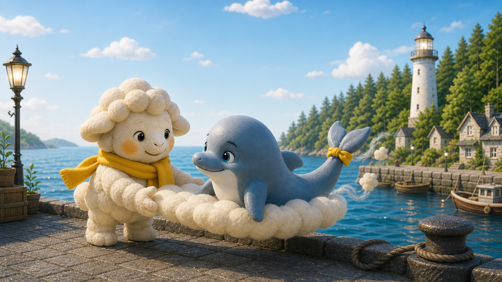

港のなかまたちの物語
CHAPTER 01
序章 ― 昼の港で
読む時間の目安：約2分。途中で休んでも、またここから。
昼間のSleeportには、ドルタルがいます。
青灰色の落ち着いた体色、尻尾に黄色いネクタイをリボンのように結んで、桟橋のそばのテーブルに書類や地図を広げて、来訪者の話を静かに聞いています。下腹部から胴体を、スリーモが添えた雲にぴたりと預けています。ドルタルはイルカとして陸の上を歩くことができないため、Sleeportではこの雲に支えられて移動します。
ドルタルのネクタイには、小さな法則があります。仕事をしているときは首元にきちんと結んで、Sleeportにいるときは外して尻尾にリボンのように結んでいる。オンとオフを、ネクタイの場所で切り替えています。言葉にしたことはないけれど、それがドルタルなりのけじめのつけ方でした。
ドルタルがSleeportにいるのは、平日の昼間が週2日。それ以外にも、どうしても必要な夜は子どもたちの寝かしつけが終わってから顔を出します。土日や休日には、家族を連れてくることもある。港のベンチで妻と子どもたちが過ごしている間、少し離れたテーブルで来訪者と話しているドルタルの姿は、Sleeportではいつものことになっていました。
家族がいるから、夜ずっとはいられない。でも、必要なときは来る。そのバランスが、ドルタルらしいやり方でした。
来訪者が「どこから整理すればいいかわからない」と言うと、ドルタルはこう返します。
ドルタル：「原因は一つとは限りません。まず分けて見ていきましょう」
責めない。急かさない。感情を切り捨てず、でも構造ごと見ていく。それがドルタルのやり方です。
そしてもう一つ、ドルタルがよく言うことがあります。
ドルタル：「場所が合っていなかっただけかもしれません」
なぜドルタルがその言葉を知っているのか、理由があります。自分自身がかつて、能力があるのに実力不足だと感じ続けていた時期があるからです。
これは、ドルタルがここにたどり着くまでの物語です。
CHAPTER 02
一、本当は優秀だった
シオナミ町の行政機関で、ドルタルは長年、責任ある役職を担っていました。
複雑な案件を整理する力。数字と感情を同時に扱う判断力。現場の声を拾いながら、上層部が求めるものに落としていく調整力。同僚には「ドルタルさんに頼めばなんとかなる」と言われてきました。部下からは信頼され、上司からは「あいつに任せておけば大丈夫だ」と言われていた。
外から見れば、間違いなく優秀な管理職でした。
でもドルタルは、その言葉を素直に受け取れませんでした。
「なぜ自分はこんなにできないのか」
評価されるたびに、そう思っていました。周りが「助かりました」と言う。でも自分の中には「もっとうまくできたはずだ」「今日の判断は本当に正しかったのか」という問いが残る。外からの評価と、内側の自己評価が、ずっとかみ合っていなかった。
このギャップが、ドルタルの精神を少しずつ削っていきました。
CHAPTER 03
二、サンドイッチ構造の重圧
なぜそのギャップが生まれたのか。今のドルタルには、わかります。
中間管理職という立場は、上からも下からも同時に圧力がかかる構造です。
上層部は「コストを削れ、成果を出せ、もっと効率化しろ」と言う。現場の部下は「負担が大きすぎる、もっとサポートしてほしい、この方針では動けない」と言う。その間で、ドルタルはずっと緩衝材でした。
上の声を柔らかくして下に届け、下の声を整理して上に届ける。誰かが倒れればカバーする。誰かのミスは責任として引き受ける。それをやりながら、自分自身の仕事もこなす。
そうしていれば、組織は回る。
そう信じてやってきました。でも、それは「自分の実力で成果を出す」という状態ではなかった。どれだけ能力があっても、構造的に消耗する場所では、その実力が数字に表れにくい。成果は出ているのに、自分が疲弊しているという矛盾の中にいた。
外からの評価が高いのに、内側の手応えがない。「頑張っているのに、なぜ足りない気がするのか」。その問いの答えは「自分の能力の問題」ではなく、「構造の問題」だったのですが、当時のドルタルにはそれが見えませんでした。
CHAPTER 04
三、家族への隠し事
帰宅すると、家族の前では「問題ない」という顔をしていました。
子どもの前では穏やかに笑い、妻の問いには答えた。
ドルタル：「少し疲れているだけ」
心配をかけてはいけない。そう思っていた。でもそれ以上に、自分が不調だと認めることが怖かった。職場では優秀だと言われている。家族を養っている。なのに眠れない、なのに自分が足りない気がする——そのことを認めたら、「自分はやはりダメだ」という答えが出てしまいそうだった。
ある日、子どもが聞いてきた。
子ども：「お父さん、どこか悪いの？」
ドルタル：「大丈夫だよ、ただ疲れているだけ」
そう答えた夜、布団の中でふと思いました。
あの子は、納得しただろうか。
わからなかった。でも次の朝も、「今日も行ってくるよ」と笑顔で玄関を出ました。
CHAPTER 05
四、眠れなくなった頃
眠れなくなっていたのは、気づかないうちでした。
最初は「少し眠りが浅い」程度でした。次第に、布団に入っても2時間、3時間と眠れない夜が増えていった。目を閉じると、仕事のことが浮かんでくる。今日の判断は正しかったか。明日の会議はどう進めるか。あの部下は最近元気がなかったが、何かできることはあるか。思考が止まらない。止めようとすると、余計に騒がしくなる。
朝、アラームが鳴っても体がすぐに動かない日が増えていました。布団の中で天井を眺めながら、「今日も行かなければ」と思うのに、体が言うことを聞かなかった。気力を振り絞って起き上がって、支度をして、玄関のドアノブに手をかけた瞬間、胃がきゅっと締まる感覚がありました。吐き気というほどではない。でも、気持ちのいい感覚でもなかった。それが毎朝のことになっていても、「仕事に行けているから大丈夫」と思っていました。
それでも、翌朝は出勤しました。
「眠れないくらいで止まれない」
毎朝、自分に言い聞かせていました。
眠れない夜が続くほど、日中の判断が鈍くなっていきました。自分でも気づいていた。でも認められなかった。認めれば、何かが崩れてしまう気がした。「自分が足りないから眠れない」ではなく、「構造が重すぎるから眠れない」という視点は、そのときはまだ持てなかった。
CHAPTER 06
五、引き受けすぎた夜

ある出来事が、引き金を引きました。
部下がミスをしました。大きなミスではなかった。でも影響が外に出てしまっていた。ドルタルは迷わず前に出ました。「私の確認が不十分でした」と上司に申告した。部下を矢面に立たせるより、自分が引き受ける方がいいと判断しました。それまでもそうしてきた。それがドルタルのやり方でした。
でも今回は違いました。
上司は執拗でした。「普段から期待しているからこそ」という言葉を前置きに、繰り返し責め続けた。会議でも、廊下でも、メールでも。「ドルタルさんなら防げたはずだ」「このクラスのミスは許容できない」。ドルタルはその都度、頭を下げ、説明し、対応した。部下を庇いながら、上からの圧力を一身に受け続けた。
何週間もかけて、事態を収拾しました。原因を整理して、再発防止策をまとめて、関係者に頭を下げて回って。そして全てが終わったとき、周囲は元に戻っていました。
上司：「ドルタルさん、次の案件もよろしく頼むよ」
部下：「ドルタルさんが助けてくれなかったら、どうなっていたかわかりません」
何事もなかったようでした。
「何も変わっていない」
その感覚が、胸の奥で静かに燃えていました。あれだけのことがあって、誰も何も変わっていない。自分だけが消耗した。責め続けられた記憶が体の中にまだ残っているのに、周りは次に進んでいる。感情の整理がつかないまま、また同じ役割を求められている。
そしてある夜、書類の山を前にして、ドルタルは動けなくなりました。
「なぜ自分はこんなに非効率なのか」
その問いが出た瞬間から、沼に入り始めていました。できていないことを数え始めた。あの件の対応はよかったのか。誰かに頼めたはずのことを、また一人で抱えていたのではないか。
守りたいと思っているのに、守れているのかわからない。「ちゃんとした自分でなければ」という強さが、どこかで「ちゃんとできていない自分」への嫌悪に変わっていた。
完璧にできないことへの憎悪。誰にも言えないことへの憎悪。変われない自分への、諦めと憎悪が混ざったような、暗いもの。
うとうとしたのは、そのまま机で力尽きたようなかたちでした。深く眠れたわけではない。でも夢を見た記憶が、かすかにありました。何かがそばにいたような、不思議な感覚。重さを受け取られたような感覚。翌朝、少しだけ軽かった。
何があったのか、そのときはわかりませんでした。
翌週、ドルタルは休職を申請しました。体が、もう動こうとしなかった。
CHAPTER 07
六、休職と、Sleeportへ

1ヶ月の休職が始まりました。
最初の数日は、何もできませんでした。布団の中にいるのに眠れない。何かをしなければという焦りはあるのに、体が動かない。「休んでいいんだ」と思おうとしても、「こんなことをしていていいのか」という声の方が大きかった。
ある午後、外の空気を吸おうと思って外に出ました。水路伝いに進んでいたら、いつの間にか海沿いに出ていました。灯台の光が見えた。小さな港がありました。桟橋の近くに、雲でできたような白い小さな生き物が、波打ち際に座っていました。
スリーモがドルタルの顔を見た瞬間、少しだけ動きを止めました。その意味を、ドルタルはしばらく知りませんでした。スリーモは何も言わずに近づいて、ドルタルの体の下にそっと雲を纏わせました。ふわりと体が浮き上がり、ドルタルは雲に乗って初めて桟橋の上へ進みました。それから、ただ港の端で雲に身を預けるよう促しました。
スリーモ：「急がなくていいよ。ここにいていいから」
声をかけられた瞬間、涙が出そうになりました。なぜかわかりませんでした。ただ、長い間誰にも言えなかった何かが、その一言で揺れた気がしました。
その日は、ほとんど話しませんでした。ただ港の端で雲に乗ったまま、波の音を聞いていた。帰り際、スリーモがぽつりと言いました。
スリーモ：「また来てもいいよ」
ドルタルは、また来ました。翌日も、その翌日も。
少しずつ話し始めました。シオナミ町での仕事のこと、部下を庇ったこと、上司に責め続けられたこと、事態が収まった後に周囲が何事もなかったように接してきた違和感。スリーモはただ聞いていた。評価しなかった。解決策も出さなかった。ただ、そこにあるものを、そこにあるままにしておいてくれた。
その時間の中で、ドルタルは少しずつ自分の感情を確かめることができました。怒っていた。傷ついていた。疲れていた。そして——誰かに知ってほしかった。一人で持ってきたことを、誰かに見てもらいたかった。
スリーモ：「それを、ずっと一人で持ってたんだね」
その言葉で、ドルタルは少し泣きました。解決したわけではない。何かが変わったわけでもない。それでも、「一人で持ってた」と言ってもらえたことで、初めてその重さが自分のものとして見えた気がしました。
CHAPTER 08
七、家族への打ち明け
スリーモと話す時間が続く中で、ドルタルの中に変化が起きていました。
感情を整理する、ということが少しずつわかってきていました。受け取ってもらうことで、自分の中にあるものが見えてくる。見えてくると、それを誰かに伝えられる言葉になる。
弱さを持っていることは、認めてもいいことだったのかもしれない。
ある夜、妻が静かに聞いてきました。
妻：「あなた、最近どこかに行ってるのね。少し変わった気がして」
ドルタル：「……眠れていない。ずっと」
その言葉が、静かに出てきました。これまでなら「大丈夫」と言っていたはずの場面で。スリーモのそばで何度も感情に触れてきたことが、この一言を出せるようにしていたのかもしれません。
妻は何も責めず、ただ隣に座っていた。その静けさが、何かをほどきました。ドルタルは話し続けました。眠れないこと、仕事が頭から離れないこと、部下を庇って一人で責任を引き受けたこと、全てが収まった後に周囲が何事もなかったように接してきたときの違和感。それが自分の中で限界になったこと。
全部話し終えたあと、妻はしばらく黙っていました。
妻：「いつも頑張ってくれてありがとう」
ドルタルは、その言葉をすぐに受け取れませんでした。責めないどころか、感謝してくれていた。それが意外で、しばらく言葉が出なかった。
妻：「何かあったらいつでも話していいよ。家族なんだから」
その言葉が、胸の奥まで届きました。「弱いところを見せてはいけない」と思い込んでいた。でも妻は、話してくれることを当たり前のこととして受け取ってくれていた。隠し続けてきた何年間が、少しだけ報われた気がしました。
安心感が、じわりと広がっていきました。その日から、少しずつ話せるようになっていきました。仕事のこと、体のこと、思っていること。全部ではなかったけれど、以前のように一人で全部抱え込もうとは、しなくなっていきました。
翌朝のことです。
子どもたちが起きてきて、ドルタルの顔を見るなり駆け寄ってきました。上の子が折りたたんだ紙を差し出しました。
上の子：「昨日、保育園でパパの絵描いたんだ。渡したかった」
紙を開くと、二枚の絵が描いてありました。一枚には、首元に黄色いネクタイを結んでいるパパと、みんなの前に立ってみんなを引っ張りながら一緒に仕事をしている様子。もう一枚には、そのネクタイを尻尾のところにリボンのように結んでいるパパと、家族みんなで遊んでいる場面。
下の子が言いました。
下の子：「どっちのパパも大好き」
ドルタルは、その言葉をすぐに受け取れませんでした。
休職している間、「仕事をしていない自分」をどこかで責めていました。家にいる時間が長くなるほど、「こんなことをしていていいのか」という声が頭の中で繰り返されていた。でも子どもたちの目には、仕事でみんなを引っ張るパパも、家で一緒に遊んでくれるパパも、どちらも同じ「大好きなパパ」として映っていた。
「頑張らなきゃ」
それは以前のような、追い立てられる焦りではありませんでした。この家族のために、もう少しだけ自分を大切にしながら、前に進んでみよう。そういう気持ちでした。
話すたびに、重さが外に出ていきました。一人で持っていたときには重くなる一方だったものが、誰かと持つことで、少し軽くなっていきました。
これがドルタルにとっての、行動変容の始まりでした。
CHAPTER 09
八、場所を変える決断
家族に打ち明けてから、ドルタルは少しずつ整理し始めました。
自分は本当に「実力不足」だったのか。振り返ると、そうではなかった。同じ力を、別の場所で使えば、全く違う結果が出るはずだと思えてきた。サンドイッチ構造の中では発揮できなかった能力が、適切な領域では本来の力として評価される。問題は能力ではなく、活躍する場所の設計だった。
全部を変える必要はない。変えられる範囲から、一つだけ。
それが、ドルタルが自分に言い聞かせた言葉でした。
シオナミ町での勤務を週3日に変更しました。残りの時間を、自分が本来の力を使える場所に充てる。休職中に通い続けてきたSleeportに、正式に関わっていく決断をしました。
Sleeportには「整える」という役割がありました。状況を構造化する。感情を切り捨てずに、でも方向性をつける。変えられる範囲から、小さく始める。それはまさに、ドルタルがシオナミ町で培い続けた力でした。サンドイッチ構造の中では消耗するだけだったその力が、Sleeportでは来訪者のために使える。
活躍できる場所を選ぶ、という選択が、ドルタルを変えました。ドルタルはSleeportに留まりました。スリーモが2年間かけて作ってきた港に、静かに加わっていきました。
CHAPTER 10
九、ポルトのこと
Sleeportに加わってから、少しずつ時間が経ちました。
来訪者と向き合う時間が積み重なっていきました。抱え込みすぎて限界を超えた人、頑張ることをやめられなかった人、「自分が動かなければ」と思い続けて体が動かなくなった人。ドルタル自身がかつてそうだったからこそ、その感覚が手に取るようにわかりました。
来訪者の話を聞きながら、ドルタルは少しずつ自分のやり方を見つけていきました。全部を伝えようとしない。答えを出さない。ただ、その人が自分で気づけるような言葉を、静かに置いていく。それがドルタルの関わり方でした。まだ模索しながらではありましたが、それが自分にとっての新しい挑戦でもありました。
スリーモと二人で港を支えるようになって、半年ほど経ったある夜のことです。
深夜の港に、翼を傷めた鳥が流れ着いてきました。ドルタルは海に泳ぎ出て、その鳥を水の中から持ち上げました。堤防の上ではスリーモが雲を差し出し、二人で鳥を受け止めました。
翌朝目を覚ましたその鳥——ポルトと名乗った——は、しばらくするとすぐに飛んで戻ろうとしました。翼はまだ治っていないのに、「チームが待っている」「自分がいないと」と言いながら桟橋の端に立った。
その姿を見て、ドルタルの胸の中で何かが動きました。
「知っている、この感覚を」
責任感に見えて、実は「自分がいなければ不安だ」という感覚。自分がいることで場を成立させようとすること。ドルタルはかつて、それを当然のことだと信じていました。
でも、ポルトを責めたいとは思いませんでした。自分も同じだったから。
どうやって伝えればいいか、考えました。全部言っても、今のポルトには届かないかもしれない。受け取る準備がないときに言葉を渡しても、傷になるだけかもしれない。自己嫌悪にさせたくなかった。ただ、何か引っかかるものだけを、残しておきたかった。
スリーモがポルトを止めるのを見ながら、ドルタルはその夜、ぽつりと話しました。自分の過去のこととして。答えを出さずに、言葉の切れ端だけを置くように。
ドルタル：「前の仕事で、自分がいないと回らないと思っていた時期があった」
ドルタル：「でも今思うと、自分がいることで、周りが育つ余地を奪っていたのかもしれない、と」
ドルタル：「誰かにしかできないことを作ることで、その人が必要とされる。それって、一見いいことに見えるけど——」
そこで止めました。続きは言いませんでした。
気づくのはポルト自身でなければならない、と思っていました。言葉を受け取る準備ができたとき、あの夜の話が意味を持つかもしれない。そのための種を、ただ置いておきたかった。
3週間後、ポルトの翼が治りました。元の島へ戻ると言って、朝の港から飛び立っていきました。ドルタルはその背中を見送りながら、静かにテーブルに戻りました。
ポルトがどんな答えを出すか、そのときのドルタルにはわかりませんでした。でも、種は渡せた気がしていました。
かつては自分が全てを引き受けて、全てを解決しようとしてきた。でも今は、解決しない関わり方を選んでいる。全部を渡さずに、気づきだけを置いていく。それがどれほど難しく、どれほど大切なことか。ポルトとの関わりを通じて、ドルタルは自分自身にとっても新しいことを学んでいきました。
CHAPTER 11
十、ドルタルが担うもの
SleeportにはRESTというフレームワークがあります。
R（気づく）・E（受け止める）・S（立ち止まる）・T（整える）という、回復の四つのステップです。ドルタルが担っているのは「T：Tune（整える）」。
感情を切り捨てず、でも構造ごと見ていく。原因を一つに決めつけず、環境・仕事・人間関係・身体を分けて見ていく。全部を変えようとせず、変えられる範囲から一つずつ。そして——
ドルタル：「場所が合っていなかっただけかもしれません」
これをドルタルが言えるのは、自分自身がその言葉を必要としていたからです。能力はあったのに、場所が違ったせいで発揮できなかった。自己評価が低くて、他者評価が高い。そのギャップが自分を削ってきた。でも今は知っています。問題は能力ではなく、場所の設計だった、と。
CHAPTER 12
十一、弱さのこと、今も途中にいること
完璧に整えられるわけではありません、とドルタルは言います。
今でも、数字や理論で固めすぎることがある。感情的な話に少し戸惑うことがある。相談されると、解決策を出そうとしすぎることがある。
でも、かつてと違うことがあります。それに気づけるようになったこと。
ドルタル：「守るために、相談するという選択もあります」
自分が言えなかった言葉を、今は来訪者に伝えられます。「眠れていない」と言えるまでに時間がかかった自分がいたから、その時間を責めずにいられる。
ドルタルはまだ途中にいます。だからこそ、途中にいる人に届けられるものがあります。
CHAPTER 13
今夜の問いかけ
今も、昼のSleeportには、ドルタルがいます。
今日、「自分には実力がない」と感じていませんか？
それは本当に、あなたの能力の問題でしょうか。もしかしたら、場所の問題かもしれません。構造の問題かもしれません。外からの評価と内側の手応えが合っていないなら、問題は「あなた」ではなく「置かれた環境」にある可能性があります。
ドルタル：「変えられる範囲から、一箇所だけ調整しましょう」
そして、一人で持ちすぎているなら、誰かに一言だけ言ってみてください。「眠れていない」でも、「少し重い」でも。あの夜のドルタルに必要だったのも、解決策ではなかった。妻の隣で「一言」言えたこと、それだけで、何かが変わり始めました。